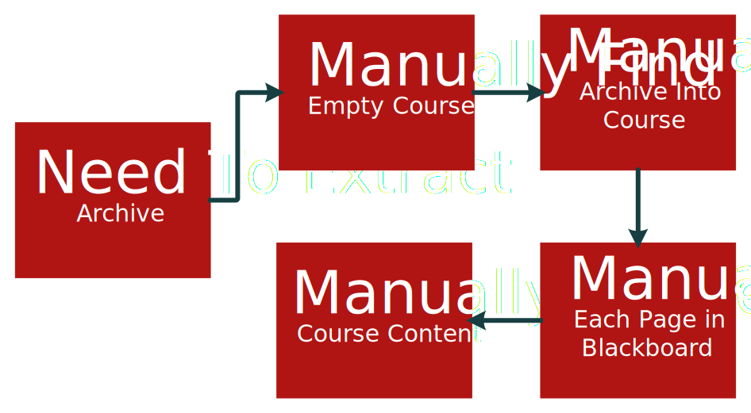

Professors have difficulty retrieving archived Blackboard courses' content after it has been exported to a Blackboard Course Archive.
Our Goal:
Goal: Provide a tool which extracts blackboard archives into an easily navigable set of HTML documents.
The Current Process:

Our Process:
Major Functional Compnents
Risk Matrix
Click on a risk item to view more information.
Impact / Probability
Very Low
Low
Medium
High
Very High
Very High
T2
C2
High
Medium
C1
Low
T3
Very Low
T1
Technical Risks
T1: Security permission issues
T2:Blackboard modifies its archive formatting
T3: Blackboard Abandons IMSCC Archive Formatting within 2 Years
Customer Risks
C1: Customer dislikes UX or UI
C2: University migrates to new learning management system
Our Team
Mentor
Dr. Steven Zeil
Dr. Zeil is an Associate Professor at Old Dominion University. He Graduated from Ohio State University with a Ph. D. in Computer Science. He has completed extensive research in software testing, reliability measures, distance learning and digital libraries.
Tristan Pressley
I study Computer Science at Old Dominion University, expecting to graduate in spring 2017 with my bachelors degree. I work part time as an IT Co-op at Huntington Ingalls Industries, Newport News Shipbuilding. I focus mostly on .NET and web development. I hope to continue my employment at the shipyard after graduation.
Austin Tillery
My name is Austin Tillery and I am studying Computer Science at Old Dominion University. I am currently a senior graduating in May 2017. I hope to become a software developer working on various programs and applications for mobile development. My hobbies include; programming, video gaming, and singing.
Grant Atkins
Hello, my name is Grant Atkins and I am a senior Computer Science Student at ODU. I am currently in the linked bachelors to masters program with plans to get my masters a year after I graduate. I currently work at ODU as a research assistant, focusing mainly on iOS and web development both front-end and back-end.
Devin Haslam
Hi, I am a Computer Science senior at Old Dominion University. Currently I am working as a research assistant designing algorithms in the bioinformatics field. I hope to graduate this Spring, but would like to continue studying as a graduate student.
Merly Mathis
I am a Computer Science major at Old Dominion University. My graduation date is spring 2017. Currently I have a Co-op with Huntington Ingalls Industries in Newport News. During this semester I'll be working with the cyber security team at HII. After graduation, I hope to continue to apply my computer science skills in the area of Cyber Security.
Dominic Nguyn
I have always been interested with technology which has aided my decision to major in Computer Science. I am currently working with the Systems Group at ODU. I am Vietnamese and enjoy playing sports, taking naps, and having a good time.
Christopher Soffos
I am currently a Computer Science major at ODU, expected to graduate Spring 2017. I am currently employed full-time with the CS Systems Group as a Systems Engineer with a focus in Linux, Network, and Security administration.